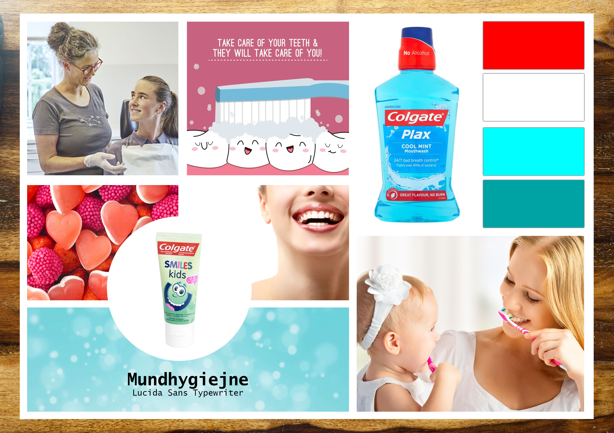
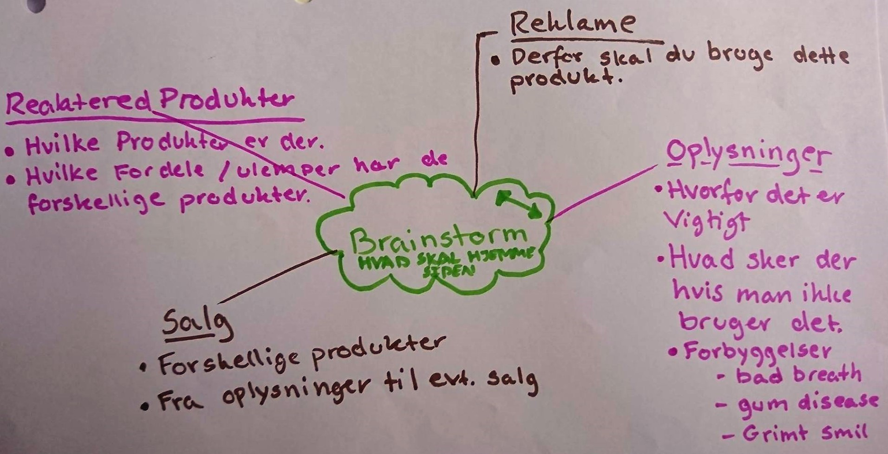

One page
Denne opgave startede ud med at vi fik udleveret et produkt vi skulle arbejde med de næste to uger. Sammen med min makker fik vi Colgates junior tandpasta fra smiles serien.
Derfra skulle vi lave en hjemmeside der omhandlede dette produkt, om det var en salgs side, reklame oplysnings side mm. var lige meget, dog skulle hjemmesiden være en one page side.
Link til hjemmeside : Tandpasta
Scrum
Under dette projekt skulle vi bruge scrum som vores værktøj til projektstyring. Scrum metoden er forklaret på virksomheds siden: Scrum.
Moodboard
For at skabe inspiration til vores opgave skulle der laves et moodboard. Gennem dette board fandt vi vores farve tema, vores tekst font, og den stemning vi ville skabe på vores hjemmeside.
Spørgsmål
Vi stillede nogle spørgsmål til en del forskellige mennesker, både folk vi kendte og folk vi mødte rundt omkring.| 1. | Tænker du over hvilket produkt / mærke af tandpasta dine børn bruger? |
| 2. | Hvordan er du blever oplyst om børnetandpasta, hvis du er? |
| 3. | Er der en grund til du fortrækker et tandpasta mærke, frem for et andet? |
| 4. | Hvor vigtig er tandplejen for dig, og din hverdag? |
| 5. | Kender du til nogle forskellige børste teknikker? |
Målgruppe
At finde en målgruppe der ville passe til vores produkt var utrolig svær, da næsten alle mennesker bruger tandpasta, derfor brugte vi en del tid på at skære ned på målgruppen.Vores målgruppe blev til forældre til børn på alderen mellem 0 - 12 år, der går op i at deres børns tænder, blev passet ordentlig. Disse forældre er ikke bange for at ændre deres vaner, og ændre deres tandpasta mærke til et andet hvis de finder ud af deres ikke passer helt så godt til deres tænder, som et andet mærke måske ville. Disse forældre ligger i middleklassen, og vil gerne sikre sig at tandplejen har en plads i deres budget.
Brainstorm
Vi lavede en brainstorm over hvad hjemmesiden kunne indeholde, for at lave nogle forskellige ideer. Gennem research, og snakken med vores målgruppe, fandt vi ud af
vi ville lave en hjemmeside, der ville give oplysninger om tandpasta.